А вот собственно и вопросы:
Информационные технологии – процессы обработки и хранения информационных ресурсов.
Этапы развития технологий:
- (до второй половины XIX в.) – “ручная” информационная технология, инструментарий которой составляли: перо, чернильница, книга. Коммуникации осуществлялись ручным способом путем переправки через почту писем, пакетов, депеш. Основная цель технологии – представление информации в нужной форме.
- (с конца XIX в.) – “механическая” технология, инструментарий которой составляли: пишущая машинка, телефон, диктофон, оснащенная более совершенными средствами доставки почта. Основная цель технологии – представление информации в нужной форме более удобными средствами.
- (40-60-е гг. ХХ в.) – “электрическая” технология, инструментарий которой составляли: большие ЭВМ и соответствующее программное обеспечение, электрические пишущие машинки, ксероксы, портативные диктофоны.
- (с начала 7-х гг.) – “электронная” технология, основным инструментарием которой становятся большие ЭВМ и создаваемые на их базе автоматизированные системы управления (АСУ) и информационно-поисковые системы (ИПС), оснащенные широким спектром базовых и специализированных программных комплексов. Центр тяжести технологии еще более смещается на формирование содержательной стороны информации для управленческой среды различных сфер общественной жизни, особенно на организацию аналитической работы. Множество объективных и субъективных факторов не позволили решить стоящие перед новой концепцией информационной технологии поставленные задачи. Однако был приобретен опыт формирования содержательной стороны управленческой информации и подготовлена профессиональная, психологическая и социальная база для перехода на новый этап развития технологии.
- (с середины 80-х гг.) – “компьютерная” (“новая”) технология основным инструментарием которой является персональный компьютер с широким спектром стандартных программных продуктов разного назначения. НА этом этапе происходит процесс персонализации АСУ, который проявляется в создании систем поддержки принятия решений определенными специалистами. Подобные системы имеют встроенные элементы анализа и интеллекта для разных уровней управления, реализуются на персональном компьютере и используют телекоммуникации. В связи с переходом на микропроцессорную базу существенным изменениям подвергаются и технические средства бытового, культурного и прочего назначений. Начинают широко использоваться в различных областях глобальные и локальные компьютерные сети.
Изменяется цель технологии. Акцент в информационной технологии начинает перемещаться с формы представления информации на формирование ее содержания.
Локальная сеть (LAN) – объединение двух и более компьютеров, позволяющее им совместно работать с программами и данными.
Топология локальных сетей – физическое расположение компьютеров сети относительно друг друга и способ соединения их линиями.
Кольцо
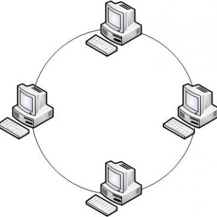Кольцо – это топология локальной сети, в которой рабочие станции подключены последовательно друг к другу, образуя замкнутое кольцо. Данные передаются от одной рабочей станции к другой в одном направлении (по кругу). Каждый ПК работает как повторитель, ретранслируя сообщения к следующему ПК, т.е. данные передаются от одного компьютера к другому как бы по эстафете. (используется в оптоволокне)
Достоинства:
- простота установки;
- практически полное отсутствие дополнительного оборудования;
- возможность устойчивой работы без существенного падения скорости передачи данных при интенсивной загрузке сети;
- отсутствие коллизий;
- высокая надежность;
- расширяемость.
Недостатки:
- каждая рабочая станция должна активно участвовать в пересылке информации; в случае выхода из строя хотя бы одной из них или обрыва кабеля – работа всей сети останавливается;
- подключение новой рабочей станции требует краткосрочного выключения сети, поскольку во время установки нового ПК кольцо должно быть разомкнуто;
- сложность конфигурирования и настройки;
- сложность поиска неисправностей;
- симплекс;
- сложность масштабирования.
Звезда
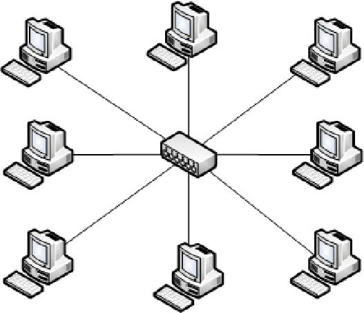Звезда – это топология локальной сети, где каждая рабочая станция присоединена к центральному устройству (коммутатору или маршрутизатору). Центральное устройство управляет движением пакетов в сети. Каждый компьютер через сетевую карту подключается к коммутатору отдельным кабелем. Самая распространенная топология для проводных и беспроводных сетей. При необходимости можно объединить вместе несколько сетей с топологией “звезда” – в результате вы получите конфигурацию сети с древовидной топологией.
Достоинства:
- выход из строя одной рабочей станции или повреждение ее кабеля не отражается на работе всей сети в целом;
- отличная масштабируемость: для подключения новой рабочей станции достаточно проложить от коммутатора отдельный кабель;
- легкий поиск и устранение неисправностей и обрывов в сети;
- высокая производительность;
- простота настройки и администрирования;
- в сеть легко встраивается дополнительное оборудование;
- низкий уровень коллизий.
Недостатки:
- выход из строя центрального коммутатора обернется неработоспособностью всей сети;
- дополнительные затраты на сетевое оборудование – устройство, к которому будут подключены все компьютеры сети (коммутатор);
- повышенный расход кабеля;
- число рабочих станций ограничено количеством портов в центральном коммутаторе.
Шина
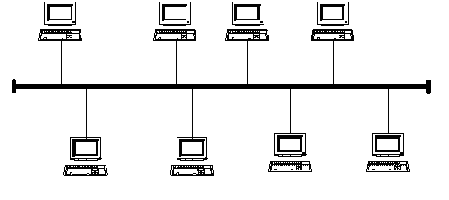Шина (или, как ее еще часто называют общая шина или магистраль) предполагает использование одного кабеля, к которому подсоединены все рабочие станции.
Общий кабель используется всеми станциями по очереди. Все сообщения, посылаемые отдельными рабочими станциями, принимаются и прослушиваются всеми остальными компьютерами, подключенными к сети. Из этого потока каждая рабочая станция отбирает адресованные только ей сообщения.
Достоинства:
- простота настройки;
- относительная простота монтажа и дешевизна, если все рабочие станции расположены рядом;
- выход из строя одной или нескольких рабочих станций никак не отражается на работе всей сети.
Недостатки:
- неполадки шины в любом месте (обрыв кабеля, выход из строя сетевого коннектора) приводят к неработоспособности сети;
- сложность поиска неисправностей;
- низкая производительность – в каждый момент времени только один компьютер может передавать данные в сеть, с увеличением числа рабочих станций производительность сети падает;
- плохая масштабируемость – для добавления новых рабочих станций необходимо заменять участки существующей шины.
Программы-архиваторы (Программы-упаковщики)- это программы, реализующие процесс архивации, позволяющие создавать и распаковывать архивы. Они за счет специальных методов сжатия информации создают копии файлов меньшего размера и объединяют копии нескольких файлов в один архивный файл.
Программы-архиваторы позволяют:
- помещать копии файлов в архив и извлекать файлы из архива;
- просматривать оглавление архива и тестировать его целостность;
- удалять файлы, находящиеся в архиве, и обновлять их;
- устанавливать пароль при извлечении файлов из архива.
Интернет — всемирная система объединённых компьютерных сетей, построенная на базе протокола IP и маршрутизации IP-пакетов. Интернет образует глобальное информационное пространство, служит физической основой для Всемирной паутины и множества других систем (протоколов) передачи данных.
В настоящее время под словом «Интернет» чаще всего имеется в виду Всемирная паутина и доступная в ней информация, а не физическая сеть.
К концу 2011 года число пользователей, регулярно использующих Интернет, составило около 2,3 млрд человек.
История:
В 1957 Министерство обороны США посчитало, что на случай войны Америке нужна надёжная система передачи информации. Агенство по перспективным научно-исследовательским разработкам США предложило разработать для этого компьютерную сеть,которая была названа ARPANET, и в 1969 году в рамках проекта сеть объединила четыре указанных научных учреждения. Все работы финансировались Министерством обороны США. Затем сеть ARPANET начала активно расти и развиваться, её начали использовать учёные из разных областей науки.
Первый сервер ARPANET был установлен 2 сентября 1969 в Калифорнийском университете (Лос-Анджелес). Компьютер Honeywell DP-516 имел 24 Кб оперативной памяти.
29 октября в 21:00 между двумя первыми узлами сети ARPANET, находящимися на расстоянии в 640 км — в Калифорнийском университете Лос-Анджелеса и в Стэнфордском исследовательском институте— провели сеанс связи. Чарли Клайн пытался выполнить удалённое подключение из Лос-Анджелеса к компьютеру в Стэнфорде.
В первый раз удалось отправить всего три символа «LOG», после чего сеть перестала функционировать. LOG должно было быть словом LOGIN(команда входа в систему). В рабочее состояние систему вернули уже к 22:30 и следующая попытка оказалась успешной. Именно эту дату можно считать днём рождения Интернета.
1971 г. - была разработана первая программа для отправки электронной почты по сети.
1973 г. - к сети были подключены через трансатлантический телефонный кабель первые иностранные организации из Великобритании и Норвегии, сеть стала международной.
1984 г. - была разработана система доменных имен.
1991 г. - всемирная паутина стала общедоступна в Интернете.
1997 г. - в Интернете насчитывалось уже около 10 млн компьютеров, было зарегистрировано более 1 млн доменных имён. Интернет стал очень популярным средством для обмена информацией. В течение пяти лет Интернет достиг аудитории свыше 50 миллионов пользователей.
Текстовые редакторы
Для обработки текстовой информации на компьютере используются приложения общего назначения - текстовые редакторы.
Текстовые редакторы — это программы для создания, редактирования, форматирования, сохранения и печати документов. Современный документ может содержать, кроме текста, и другие- объекты (таблицы, диаграммы, рисунки и т. д.).
Простые текстовые редакторы (например, Блокнот) позволяют редактировать текст и осуществлять простейшее форматирование шрифта.
Более совершенные текстовые редакторы, имеющие целый спектр возможностей по созданию документов (например, поиск и замена символов, средства проверки орфографии, вставка таблиц и др.), называют иногда текстовыми процессорами. Примером такой программы является Word из офисного пакета MicrosoftOffice, или Writer из пакета StarOffice.
Мощные программы обработки текста — настольные издательские системы — предназначены для подготовки документов к публикации. Пример подобной системы — Adobe PageMaker.
Для подготовки к публикации в Интернете web-страниц используют специализированные приложения (например, Microsoft FrontPage или Macromedia Dreamweaver).
Редактирование и форматирование
Редактирование — преобразование, обеспечивающее добавление, удаление, перемещение или исправление содержания документа.
Редактирование документа обычно производится путем добавления, удаления или перемещения символов или фрагментов текста.
Объектно-ориентированный подход дает возможность реализовать механизм встраивания и внедрения объектов (OLE — Object Linking Embedding). Этот механизм позволяет копировать и вставлять объекты из одного приложения в другое. Например, работая с документом в текстовом редакторе Word, в него можно встроить изображения, анимацию, звук и даже видеофрагменты и таким образом из обычного текстового документа получить мультимедиа-документ.
Форматирование — преобразование, изменяющее форму представления документа.
Любой документ состоит из страниц, поэтому в начале работы над документом необходимо задать значения параметров страницы: формат, ориентацию, поля и др. Стандартным является формат страницы А4 (21х29,7 см). Существуют две возможные ориентации страницы – книжная и альбомная. Для обычных текстов чаще используется книжная ориентация, а для таблиц с большим количеством столбцов – альбомная.
Форматирование абзацев
Абзац с литературной точки зрения – это часть текста, представляющая собой законченный по смыслу фрагмент произведения, окончание которого служит естественной паузой для перехода к новой мысли.
В компьютерных документах абзацем считается любой текст, заканчивающийся управляющим символом конца абзаца. Ввод конца абзаца обеспечивается нажатием клавиши ВВОД (ENTER).
Форматирование абзацев позволяет подготовить правильно и красиво оформленный документ.
В процессе форматирования абзаца задаются параметры его выравнивания (выравнивание отражает расположение текста относительно границ полей страницы), отступы (абзац целиком может иметь отступы слева и справа) и интервалы (расстояние между строк абзаца), отступ красной строки и др.
Форматирование шрифта (символов)
Символы – это буквы, цифры, пробелы, знаки пунктуации, специальные символы. Символы можно форматировать (изменять их внешний вид). Среди основных свойств символов можно выделить следующие: шрифт, размер, начертание и цвет.
Шрифт – это полный набор символов определенного начертания. Каждый шрифт имеет своё название, например Times New Roman, Arial, Comic Sans MS. Единицей измерения шрифта является пункт (1 пт = 0,367 мм). Размеры шрифтов можно изменять в больших пределах. Кроме нормального (обычного) начертания символов обычно применяют полужирное, курсивное, полужирное курсивное.
По способу представления в компьютере различаются шрифты растровые и векторные. Для представления растровых шрифтов служат методы растровой графики, символы шрифта — это группы пикселей. Растровые шрифты допускают масштабирование только с определенными коэффициентами.
В векторных шрифтах символы описываются математическими формулами и возможно произвольное их масштабирование. Среди векторных шрифтов наибольшее распространение получили шрифты типа TrueType.
Можно также установить дополнительные параметры форматирования символов: подчеркивание символов различными типами линий, изменение вида символов (верхний и нижний индекс, зачеркнутый), изменение расстояний между символами.
Если планируется цветная печать документа, то можно задать различные цвета для различных групп символов.
Проверка орфографии и синтаксиса
Для проверки орфографии и синтаксиса используются специальные программные модули, которые обычно включаются в состав текстовых процессоров и издательских систем. Такие системы содержат словари и грамматические правила для нескольких языков, что позволяет исправлять ошибки в многоязычных документах.
Формат файла
Формат файла определяет способ хранения текста в файле. Простейший формат текстового файла (ТХТ) содержит только символы (числовые коды символов), другие же форматы (DOC, RTF) содержат дополнительные управляющие числовые коды, которые обеспечивают форматирование текста.
Компьютерный вирус — вид вредоносного программного обеспечения, способного внедряться в код других программ, системные области памяти, загрузочные секторы, и распространять свои копии по разнообразным каналам связи.
Существует несколько классификаций компьютерных вирусов:
- По среде обитания различают вирусы сетевые, файловые, загрузочные и файлово-загрузочные.
- По способу заражения выделяют резидентные и нерезидентные вирусы.
- По степени воздействия вирусы бывают неопасные, опасные и очень опасные;
- По особенностям алгоритмов вирусы делят на паразитические, репликаторы, невидимки, мутанты, троянские, макро-вирусы.
Загрузочные вирусы - заражают загрузочный сектор винчестера или дискеты и загружаются каждый раз при начальной загрузке операционной системы.
Резидентные вирусы - загружается в память компьютера и постоянно там находится до выключения компьютера.
Самомодифицирующиеся вирусы (мутанты) - изменяют свое тело таким образом, чтобы антивирусная программа не смогла его идентифицировать.
Стелс-вирусы (невидимки) - перехватывает обращения к зараженным файлам и областям, и выдают их в незараженном виде.
Троянские вирусы - маскируют свои действия под видом выполнения обычных приложений.
Основное назначение:
- ввод и редактирование данных;
- форматирование таблиц;
- для автоматизации вычислений;
- для представления результатов в виде диаграмм и графиков;
- для моделирования, когда исследуется влияние одних параметров на другие;
- проведение анализа с использованием механизмов поиска и сортировки данных;
- проведение однотипных расчетов над большими наборами данных;
- создание баз данных;
Принципы работы:
Диапазон ячеек можно выделить из подряд идущих ячеек в строке, столбце или прямоугольнике.
Если диапазон содержит числовые величины, то они могут быть просуммированы, вычислено среднее значение, найдено минимальное или максимальное значение и т.д.
В формулах при обращении к ячейкам используется два способа адресации — абсолютная и относительная адресации. При использовании относительной адресации копирование, перемещение формулы, вставка или удаление строки (столбца) с изменением местоположения формулы приводят к перестраиванию формулы относительно ее нового местоположения. Примеры абсолютной адресации: $A$10; $B$5:$D$12; $M10; K$12.
Принтер — это внешнее периферийное устройство компьютера, предназначенное для вывода текстовой или графической информации, хранящейся в компьютере, на твёрдый физический носитель, обычно бумагу
Виды:
- Матричные принтеры - используют комбинации маленьких штырьков, которые бьют по красящей ленте, благодаря чему на бумаге остаётся отпечаток символа.
- Струйные принтеры - генерируют символы в виде последовательности чернильных точек. Печатающая головка принтера имеет крошечные сопла, через которые на страницу выбрызгиваются быстросохнущие чернила.
- Лазерные принтеры - информация о странице проецируется с помощью лазерного луча на вращающийся барабан со светочувствительным покрытием, меняющим электрические свойства в зависимости от освещённости.
Способы печати:
- Матричная технология
- Струйная технология
- Пьезоструйная печать
- Термоструйная печать
- Фотоэлектронная технология печати
- Лазерная печать
- Светодиодная печать
Старый заслуженный способ, несмотря на свою медлительность и громкое стрекотание, не потерявший актуальность. Использует принцип печатной машинки.
Хотя метод распада струи жидкости на отдельные капли известен давно, применять в печатных технологиях его начали после изобретения компактных подогревателей и пьезокристаллов.
Эта технология использует ударное воздействие на красящий состав. Пластинчатый пьезокристалл работает в печатающей головке как поршень. На ударную пластину подается ток определенной силы и периода, это заставляет элемент изгибаться и выталкивать жидкость.
Как понятно из обозначения технологии, чернила разогреваются, а избыточный объем жидкости выдавливается через дюзы.
Принцип получения отпечатков в этой технологии, использует нанесение разнополярных зарядов на светочувствительный барабан и тонер.
В этой технологии используется один источник, выпускающий лазерный луч. Световой поток, проходя через призмы и отражаясь от зеркала, формирует контуры рисунка на полупроводниковой поверхности барабана.
Здесь, в качестве источника света, используется светодиодная линейка.
Системное программное обеспечение
- Это программы, которые входят в состав операционной системы и являются составной ее частью. Обычно они обеспечивают управление компонентами компьютерной системы, такими как процессор, оперативная память, устройства ввода-вывода а также сетевое оборудование. Типичным примером для системной программы является драйвер.
Драйвер – это компьютерная программа, при помощи которой другие программы получают доступ к аппаратному обеспечению некоторого устройства (например, к принтеру, сканеру, видеокарте и т. д.). Драйверы являются неотъемлемой составляющей операционной системы - совокупность программ, организующих согласованную работу всех модулей компьютера.
Обслуживающие программы
К ним относятся те программы, которые выполняют вспомогательные, обслуживающие либо сервисные функции, например архиваторы, антивирусы и программы для обслуживания жесткого диска компьютера. Программы такого типа также называют утилитами (от англ. utilize – «использовать»).
Прикладные программы
– Это обширный класс программ, предназначенный для решения отдельных определенных пользователем задач, связанных с обработкой данных в определенной области деятельности. К ним можно отнести, например, текстовые, графические, аудио, видео-редакторы, средства управления базами данных, обучающие, тестовые, игровые программы и т. д.
Архитектура – это наиболее общие принципы построения компьютера, отражающие программное управления работой и взаимодействием его основных функциональных узлов.
Минимальный состав компьютера:
- Монитор
- Системный блок
- Клавиатура
- Мышь
Основные компоненты системного блока:
- Вентиляторы
- Платы расширения
- Системная|материнская плата
- Жесткий диск (винчестер)
- Блок питания
- Дисковод оптического диска
Основные виды плат расширения:
- Видеокарта
- Звуковая карта
- Сетевая карта
Основные компоненты материнской платы:
- Центральный процессор;
- Микросхемы ОЗУ, ПЗУ;
- Разъемы для установки плат расширения (слоты), подключения накопителей (винчестера, дисководов);
- Наборы микросхем (Chipset) для управления обменом данными между всеми компонентами компьютера;
- Порты;
- Системная шина.
Центральный процессор – центральный блок компьютера, предназначенный для обработки информации и управления работой компьютера в целом. Состоит из двух частей: АЛУ и УУ.
АЛУ – арифметико-логическое устройство предназначено для обработки информации, выполнения арифметических и логических операций над данными.
УУ – устройство управления управляет работой компьютера.
Чипсет – это набор микросхем материнской платы для обеспечения работы процессора с памятью и внешними устройствами
Оперативные запоминающие устройства (ОЗУ) предназначены для хранения переменной информации: программ и чисел, необходимых для текущих вычислений.
Постоянные запоминающие устройства (ПЗУ) предназначены для хранения постоянной информации: подпрограмм, микропрограмм, констант и т.п..
Системная шина (магистраль)
Шина - совокупность токопроводящих линий, по которым обмениваются информацией устройства компьютера.
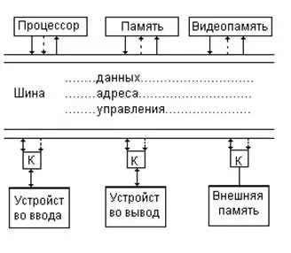Автоматизированная система - это система, состоящая из персонала и комплекса средств автоматизации его деятельности, реализующая автоматизированную технологию выполнения установленных функций.
Автоматизированная система управления или АСУ — комплекс аппаратных и программных средств, предназначенный для управления различными процессами в рамках технологического процесса, производства, предприятия.
Систе́ма управле́ния — систематизированный набор средств для управления подконтрольным объектом: возможно, сбора показаний о его состоянии, а также средств воздействия на его поведение, предназначенный для достижения заданных целей.
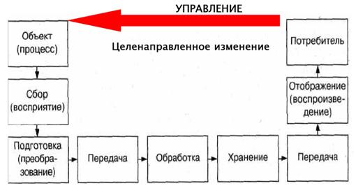Конъюнкция - это сложное логическое выражение, которое считается истинным в том и только том случае, когда оба простых выражения являются истинными, во всех остальных случаях данное сложенное выражение ложно.
Обозначение: F = A & B
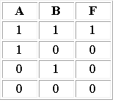Дизъюнкция - это сложное логическое выражение, которое истинно, если хотя бы одно из простых логических выражений истинно и ложно тогда и только тогда, когда оба простых логических выражения ложны.
Обозначение: F = A v B.
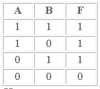Инверсия - это сложное логическое выражение, если исходное логическое выражение истинно, то результат отрицания будет ложным, и наоборот, если исходное логическое выражение ложно, то результат отрицания будет истинным. Другими простыми слова, данная операция означает, что к исходному логическому выражению добавляется частица НЕ или слова НЕВЕРНО, ЧТО.
Обозначение: F = A.
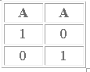Операционная система Windows - это современная многозадачная многопользовательская ОС с графическим интерфейсом пользователя. Операционные системы семейства Windows являются наиболее распространенными ОС, которые установлены в домашних и офисных ПК. Графическая оболочка ОС Windows обеспечивает взаимодействие пользователя с компьютером в форме диалога с использованием ввода и вывода на экран дисплея графической информации, управления программами с помощью пиктограмм, меню, окон, панелей (управления, задач, инструментов) и других элементов управления.
Основные функции операционной системы:
- выполнение команд пользователя по запросу (запуск и закрытие программ, ввод и вывод информации, освобождение дополнительной памяти и так далее);
- доступ к периферийным устройствам (принтеру, мыши, клавиатуре и так далее);
- загрузка программного обеспечения в оперативную память и его выполнение;
- осуществление управления оперативной памятью;
- сохранение данных об ошибках и сбоях в системе;
- обеспечение интерфейса для пользователя;
- осуществление доступа к другим носителям информации и управление ним.
Алгоритм - это система точных и понятных предписаний о содержании и последовательности выполнения конечного числа действий, необходимых для решения любой задачи данного типа.
Способы описания алгоритмов:
- на естественном языке;
- на специальном (формальном) языке;
- с помощью формул, рисунков, таблиц;
- с помощью стандартных графических объектов (геометрических фигур) – блок-схемы.
Файловая система - это функциональная часть операционной системы, обеспечивающая выполнение операций над файлами. Файловая система позволяет работать с файлами и директориями (каталогами) независимо от их содержимого, размера, типа и т. д.
Имя файла разделено на две части точкой: имя файла (префикс) и расширение (суффик), определяющее его тип (программа, данные и т.д.)
Имя файлу дает пользователь, а его тип обычно задается программой автоматически.
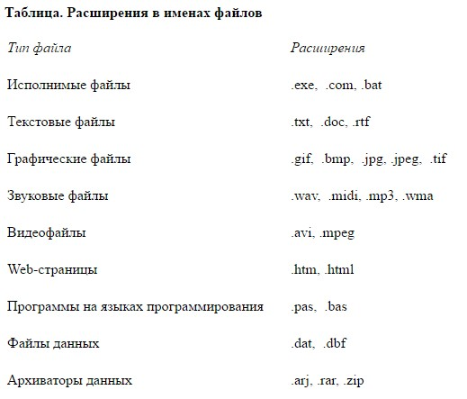Путь к файлу
Для того чтобы найти файл в иерархической файловой структуре необходимо указать путь к файлу. В путь к файлу входят записываемые через разделитель "\" логическое имя диска и последовательность имен вложенных друг в друга каталогов, в последнем из которых находится данный нужный файл.
Например, путь к файлам на рисунке можно записать так: C:\basic\ C:\Музыка\Пикник\
Архитектура компьютера - это описание организации компьютера и принципов функционирования его структурных элементов. Включает основные устройства ЭВМ и структуру связей между ними.
Любой компьютер (даже самый большой) состоит из четырех частей:
- устройства ввода информации;
- устройства обработки информации;
- устройства хранения;
- устройства вывода информации.
Конструктивно эти части могут быть объединены в одном корпусе размером с книгу или же каждая часть может состоять из нескольких достаточно громоздких устройств. Чаще всего персональный компьютер состоит из следующих устройств:
- Системный блок;
- Монитор;
- Клавиатура;
- Мышь.
Дополнительно могут подключатся другие устройства ввода и вывода информации, например звуковые колонки, принтер, сканер...
Системный блок — основной блок компьютерной системы. В нем располагаются устройства, считающиеся внутренними. Устройства, подключаемые к системному блоку снаружи, считаются внешними. Для внешних устройств используют также термин периферийное оборудование.
Монитор — устройство для визуального воспроизведения символьной и графической информации. Служит в качестве устройства вывода. Для настольных ПК в настоящее время наиболее распространены мониторы, основанные на электронно-лучевых трубках. Они отдаленно напоминают бытовые телевизоры.
Клавиатура — клавишное устройство, предназначенное для управления работой компьютера и ввода в него информации. Информация вводится в виде алфавитно-цифровых символьных данных.
Мышь — устройство «графического» управления.
Операционная система - это комплекс взаимосвязанных системных программ, назначение которого — организация взаимодействия пользователя с компьютером и выполнение всех других программ. Проще говоря, ОС требуется для того, чтобы управлять данными и осуществлять основные операции по работе с программами, он управляет памятью, процессами, и всем программным и аппаратным обеспечением. Можно сказать, что именно ОС является переходным мостиком, между человеком и компьютером.
Windows
Чаще всего для работы используют персональные компьютеры под управлением windows.Windows – это операционная система для персональных компьютеров, разработанная корпорацией Microsoft
MacOS Фирма Apple выпускают компьютеры MacBook и Mac на этой системе
Linux
Пожалуй Linux имеет самое большое разнообразие изданий и модификаций. Несмотря на это он не является самой распространённой ОС. Спросом пользуются Mint и Ubuntu. Эти платформы имеют очень удобный графический интерфейс. Из положительных качеств Linux можно отметить стабильную работу, отказоустойчивость, нетребовательность к системным ресурсам и вирусоустойчивость.
Этапы развития технических средств и информационных ресурсов:
По мере развития современной цивилизации участие в информационных процессах требовало уже не только индивидуальных, но также обобщенных знаний и опыта, способствующих переработке информации и принятию необходимых решений. Для этого человеку понадобились различные устройства. Этапы появления средств и методов обработки информации, вызвавших кардинальные изменения в обществе, определяются как информационные революции.
- Первая информационная революция связана с изобретением письменности, обусловившей качественный и количественный скачок в развитии цивилизации. Появилась возможность накопления знаний и их передачи последующим поколениям. С позиций информатики это можно оценить как появление средств и методов накопления информации.
- Вторая информационная революция (середина XVI века) связана с изобретением книгопечатания, изменившего человеческое общество, культуру и организацию деятельности самым радикальным образом. Человек не просто получил новые средства накопления, систематизации, тиражирования информации. Массовое распространение печатной продукции сделало доступными культурные ценности, открыло возможность самостоятельного и целенаправленного развития личности. С точки зрения информатики, значение этой революции в том, что она выдвинула качественно новый способ хранения информации.
- Третья информационная революция (конец XIX века) связана с изобретение электричества, благодаря которому появились телеграф, телефон, радио, позволяющие оперативно передавать и накапливать информацию в любом объеме. Этот этап важен для информатики, прежде всего тем, что ознаменовал появление средств информационной коммуникации.
- Четвертая информационная революция (70-е годы ХХ столетия) связана с изобретением микропроцессорной технологии и появлением персонального компьютера. Произошел окончательный переход от механических и электрических средств преобразования информации к электронным, что привело к миниатюризации всех узлов, приборов, машин и появлению программно-управляемых устройств и процессов. На микропроцессорах и интегральных схемах создаются компьютеры, компьютерные сети, системы передачи данных (информационные коммуникации) и так далее.
Чтобы найти нужную информацию, необходимо найти её адрес. Для этого существуют специализированные поисковые сервера (роботы индексов (поисковые системы), тематические Интернет-каталоги, системы мета-поиска, службы поиска людей и т.д.).
Технология поиска - Web-технология World Wide Web (WWW) считается специальной технологией подготовки и размещения документов в сети Интернет. В состав WWW входят и web-страницы, и электронные библиотеки, каталоги, и даже виртуальные музеи. При таком обилии информации остро встает вопрос: «Как сориентироваться в столь огромном и масштабном информационном пространстве?» В решении данной проблемы на помощь приходят поисковые инструменты.
Поисковые инструменты - это особое программное обеспечение, основная цель которого – обеспечить наиболее оптимальный и качественный поиск информации для пользователей Интернета. Поисковые инструменты размещаются на специальных веб-серверах, каждый из которых выполняет определенную функцию:
- Анализ веб-страниц и занесение результатов анализа на тот или иной уровень базы данных поискового сервера.
- Поиск информации по запросу пользователя.
- Обеспечение удобного интерфейса для поиска информации и просмотра результата поиска пользователем.
Приемы работы, используемые при работе с теми или другими поисковыми инструментами, практически одинаковы. Перед тем как перейти к их обсуждению, рассмотрим следующие понятия:
- Интерфейс поискового инструмента представлен в виде страницы с гиперссылками, строкой подачи запроса (строкой поиска) и инструментами активизации запроса.
- Индекс поисковой системы – это информационная база, содержащая результат анализа веб - страниц, составленная по определенным правилам.
- Запрос – это ключевое слово или фраза, которую вводит пользователь в строку поиска. Для формирования различных запросов используются специальные символы ("", ~), математические символы (*, +, ?).
Схема поиска информации проста. Пользователь набирает ключевую фразу и активизирует поиск, тем самым получает подборку документов по сформулированному (заданному) запросу. Этот список документов ранжируется по определенным критериям так, чтобы вверху списка оказались те документы, которые наиболее соответствуют запросу пользователя.
Большинство поисковых инструментов предлагают два способа поиска – simple search (простой поиск) и advanced search (расширенный поиск) с использованием специальной формы запроса и без нее.
Наиболее развитый сервис поиска русскоязычной информации предоставляет поисковый сервер Яndex.
Технологии поиска информации в Интернете:
- Поисковые машины (search engines)
- определитесь с темой запроса;
- обращайте внимание на язык, грамматику. Важно также правильно сформулировать и вписать ключевые слова. Каждая поисковая система имеет свою форму составления запроса — принцип один, но могут различаться используемые символы или операторы. Каждая поисковая система имеет раздел "Help" ("Помощь"), где присутствуют все синтаксические правила, а также рекомендации и советы по поиску;
- используйте возможности разных поисковых систем;
- чтобы исключить документы, содержащие определенные термины, используйте знак "-" перед каждым таким словом. Например, если Вам нужна информация о работах Шекспира, за исключением "Гамлета", то введите запрос в виде: "Шекспир-Гамлет". И для того, чтобы, наоборот, в результаты поиска обязательно включались определенные ссылки, используйте символ "+". Так, чтобы найти ссылки о продаже именно автомобилей, Вам нужен запрос "продажа+автомобиль". Для увеличения эффективности и точности поиска, используйте комбинации этих символов.
- каждая ссылка в списке результатов поиска содержит сниппет – несколько строчек из найденного документа, среди которых встречаются ключевые слова.
- помните, что поисковые системы не производят самостоятельную информацию. Поисковая система – это лишь посредник между обладателем информации (сайтом) и Вами.
Машины веб-поиска - это сервера с огромной базой данных URL-адресов, которые автоматически обращаются к страницам WWW по всем этим адресам, изучают содержимое этих страниц, формируют и прописывают ключевые слова со страниц в свою базу данных (индексирует страницы).
Более того, роботы поисковых систем переходят по встречаемым на страницах ссылкам и переиндексируют их. Так как почти любая страница WWW имеет множество ссылок на другие страницы, то при подобной работе поисковая машина в конечном результате теоретически может обойти все сайты в Интернет.
Чтобы воспользоваться данным видом поискового инструмента, необходимо зайти на него и набрать в строке поиска ключевое слово. Далее вы получите выдачу из ссылок, хранящихся в базе поисковой системы, которые наиболее близки запросу. Чтобы поиск был наиболее эффективен, заранее обратите внимание на следующие моменты:
К наиболее известным машинам веб-поиска относятся Google, Yahoo, Alta Vista, Excite, Hot Bot, Lycos. Среди русскоязычных можно выделить Яndex, Rambler, Апорт.
Поисковые системы являются самыми масштабными и ценными, но далеко не единственными источниками информации в Сети.
Каталоги (directories)
Каталог Интернет-ресурсов – это постоянно обновляющийся и пополняющийся иерархический каталог, содержащий множество категорий и отдельных web-серверов с кратким описанием их содержимого. Способ поиска по каталогу подразумевает «движение вниз по ступенькам», то есть движение от более общих категорий к более конкретным. Одним из преимуществ тематических каталогов является то, что пояснения к ссылкам дают создатели каталога и полностью отражают его содержание, то есть дает Вам возможность точнее определить, насколько соответствует содержание сервера цели Вашего поиска.
Примером тематического русскоязычного каталога можно назвать ресурс http://www.ulitka.ru/. (По ссылкам не переходить! Мне за их рекламу не платили!!!)
На главной странице данного сайта расположен тематический рубрикатор, с помощью которого пользователь попадает в рубрику со ссылками на интересующую его продукцию.
Кроме того, некоторые тематические каталоги позволяют искать по ключевым словам. Пользователь вводит необходимое ключевое слово в строку поиска и получает список ссылок с описаниями сайтов, которые наиболее полно соответствуют его запросу.
Русскоязычные каталоги: каталог@Mail.ru, Weblist, Vsego.ru.
Среди англоязычных каталогов можно выделить: http://www.DMOS.org, http://www.yahoo.com/, http://www.looksmart.com. (По ссылкам не переходить! Мне за их рекламу не платили!!!)
Растровое изображение — изображение, представляющее собой сетку пикселей или точек цветов (обычно прямоугольную) на компьютерном мониторе, бумаге и других отображающих устройствах, и материалах.
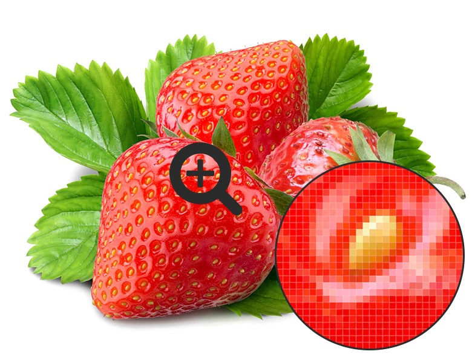Векторное изображение - это графический объект, построенный из геометрических примитивов, таких как точки, линии, сплайны и многоугольники.
К аппаратным средствам относятся:
- мониторы и видеокарты, поддерживающие графический режим отображения;
- видеоускорители, позволяющие увеличить скорость выполнения операций по обработке графической информации и, таким образом, разгружающие центральный процессор;
- ЗD-акселераторы, способные самостоятельно обрабатывать графические объекты в трехмерном пространстве и в масштабе реального времени;
- манипуляторы «мышь»;
- сканеры;
- графический планшет, для ввода изображения прямым рисованием на поверхности планшета;
- принтеры;
- графопостроители (плоттеры).
К программным средствам относят:
- графические редакторы;
- средства создания анимации;
- программные средства для работы с трехмерной графикой;
- средства деловой графики.
Компьютер работает с цифровой информацией, которую можно представить в виде серии электрических импульсов - логических нулей и единиц. Но тот звук, который мы слышим - непрерывен. Эта звуковая волна с меняющейся амплитудой и частотой является аналоговым сигналом. Чтобы записать такой звук на диск компьютера его надо преобразовать в цифровую форму. Этим занимается аналого-цифровой преобразователь (АЦП). Для воспроизведения звука, записанного в цифровом виде, цифроаналоговый преобразователь преобразовывает его в аналоговый сигнал.
Форматы звуковых файлов:
- РСМ
- WAV
- RIFF
- IFF
- MOD
- AIF или AIFF
- MID
- МР3
- VQF
- RA
РСМ расшифровывается как pulse code modulation, что и является в переводе как импульсно-кодовая. Файлы именно с таким расширением встречаются довольно редко. Но РСМ является основополагающей для всех звуковых файлов.
Самое простое хранилище дискретных данных. Один из типов файлов семейства RIFF. Помимо обычных дискретных значений, битности, количества каналов и значений уровней громкости, в wav может быть указано еще множество параметров, о которых Вы, скорее всего, и не подозревали - это: метки позиций для синхронизации, общее количество дискретных значений, порядок воспроизведения различных частей звукового файла, а также есть место для того, чтобы Вы смогли разместить там текстовую информацию.
Resource Interchange File Format. Уникальная система хранения любых структурированных данных.
Эта технология хранения данных проистекает от Amiga-систем. Interchange File Format. Почти то же, что и RIFF, только имеются некоторые нюансы. Начнем с того, что система Amiga - одна из первых, в которой стали задумываться о программно-сэмплерной эмуляции музыкальных инструментов. В результате, в данном файле звук делится на две части: то, что должно звучать вначале и элемент того, что идет за началом. В результате, звучит начало один раз, за тем повторяется второй кусок столько раз, сколько Вам нужно и нота может звучать бесконечно долго.
Файл хранит в себе короткий образец звука, который потом можно использовать в качестве шаблона для инструмента.
Audio Interchange File Format. Данный формат распространен в системах Apple Macintosh и Silicon Graphics. Заключает в себе сочетание MOD и WAV.
Файл, хранящий в себе сообщения MIDI-системе, установленной на Вашем компьютере или в устройстве.
Самый скандальный формат за последнее время. Многие для объяснения параметров сжатия, которые в нем применяют, сравнивают его с jpeg для изображений. Там очень много наворотов в вычислениях, чего и не перечислишь, но коэффициент сжатия в 10-12 раз сказали о себе сами. Специалисты говорят о контурности звука как о самом большом недостатке данного формата. Действительно, если сравнивать музыку с изображением, то смысл остался, а мелкие нюансы ушли. Качество МР3 до сих пор вызывает много споров, но для "обычных немузыкальных" людей потери не ощутимы явно.
Хорошая альтернатива МР3, разве что менее распространенная. Есть и свои недостатки. Закодировать файл в VQF - процесс гораздо более долгий. К тому же, очень мало бесплатных программ, позволяющих работать с данным форматом файлов, что, собственно, и сказалось на его распространении.
Real Audio или потоковая передача аудиоданных. Довольно распространенная система передачи звука в реальном времени через Интернет. Скорость передачи порядка 1 Кб в секунду. Полученный звук обладает следующими параметрами: 8 или 16 бит и 8 или 11 кГц.
Поиск информации по ключевому слову (фразе) в Интернете аналогичен поиску информации о каком-то слове или фразе в книге, когда для этого используется так называемый Предметный указатель, где против слова или фразы указана страница текста, на которой можно найти его разъяснение. Запрос к поисковой машине может быть двух видов: простой и сложный. Простой запрос характеризуется вводом слова или словосочетания, при этом дополнительные знаки не используются. Сложный запрос строится с использованием так называемых операторов (ключевых слов), которые в каждой поисковой машине могут иметь различия.
К средствам поисковых систем относится язык запросов.
Используя различные приёмы, можно добиться желаемого результата поиска.
- ! – запрет перебора всех словоформ.
- +– обязательное присутствие слов в найденных документах.
- - – исключение слова из результатов поиска.
- & – обязательное вхождение слов в одно предложение.
- ~ – требование присутствия первого слова в предложении без присутствия второго.
- | – поиск любого из данных слов.
- «» – поиск устойчивых словосочетаний.
- $title – поиск информации по названиям заголовков.
- $anchor –поиск информации по названию ссылок.
Государственные информационные ресурсы — это ресурсы, которые как элемент имущества находятся в собственности государства.
Государственные ресурсы делятся на следующие группы:
- федеральные ресурсы;
- информационные ресурсы, находящиеся в совместном ведении Российской Федерации и субъектов РФ;
- информационные ресурсы субъектов РФ.
Государственные информационные ресурсы обеспечивают выполнение следующих основных задач:
- государственного управления;
- обеспечения прав и безопасности граждан;
- поддержки социально-экономического развития страны, развития культуры, науки, образования и т. д.
Информационно-образовательные ресурсы – это совокупность технических, программных, телекоммуникационных и методических средств, позволяющих оптимально использовать новые информационные технологии в сфере образования, внедрять их во все виды и формы образовательной деятельности.
Кодирование графической информации
Графическая информация, хранящаяся на бумажных или иных физически существующих носителях, носит аналоговый характер. Для представления графики в ЭВМ используют дискретный формат.
Как известно, изображения создаются в двух форматах:
- растровом;
- векторном.
Растровое изображение состоит из большого количества точек, которые расположены строго по строкам и столбцам, причем каждой точке свойственно иметь свои координаты расположения на экране, цветовой оттенок и степень яркости.
Векторное изображение строится из совокупности геометрических фигур, характеристики которых представлены в числовом формате. Так, кодируются размеры геометрических объектов, координаты их вершин, толщина контуров объектов, цвет заливки.
Аппаратное обеспечение сети
ХОСТ
Основным техническим устройством является специальный компьютер, обеспечивающий информационные функции. Такую машину называют хост – компьютером – он должен всегда находится во включенном состоянии, так как обеспечивает прием и передачу данных по сети.
Все остальные компьютеры обязательно должны так или иначе быть подключенными к хост-машине. Ведь каждый пользователь, работающий внутри сети, при любых обстоятельствах использует его ресурсы.
Сетевые адаптеры(Маршрутизатор)
Маршрутизаторы нужны для подключения к открытым концам сети.
С помощью Ethernet – аппаратуры машины подключаются друг к другу. Такая система состоит из таких элементов как кабеля, специальных разъемов и сетевых адаптеров. Кабель используется при передаче и приеме информации между рабочими станциями.
Модемы
Для соединения компьютера с телефонной сетью (через которую происходит подключение к Глобальной сети), необходимо иметь специальное устройство - модем.
Модуляция – это процесс преобразования цифровой формы передача информации в аналоговую
Сетевая карта
Сетевая карта представляет из себя отдельную плату, вставляемую в материнскую плату ПК. Она, также как и множество других устройств может быть интегрированной в «материнку». Сетевые адаптеры являются устройствами приема/передачи данных и предназначены для подключения рабочих станций не только между собой, но и между хост-компьютером и маршрутизатором для выхода в Интернет.
Программное обеспечение сети
Сетевая операционная система
Сетевая операционная система – это основа основ любой сети. Она необходима для управления принятыми/переданными сообщения между серверами и рабочими станциями. Она также позволяет любому пользователю работать с общим сетевым диском или принтером, которые физически не подключены к этому компьютеру.
Характеристики сетевой операционной системы:
- управление ресурсами ПК (распределение оперативной памяти, управление периферийными устройствами и другие функции);
- предоставление собственных ресурсов для общего использования (расшаривание);
- средства, с помощью которых происходит обмен и передача сообщений в сети.
Браузер
Браузер (англ.Browser) – сетевое программное обеспечение, предназначенное для отображения содержимого веб-страниц, написанных на специальных веб-языках.
Файл – это определенное кол-во информации (программа или данные), имеющие имя и хранящейся в долговременной (внешней) памяти. Имя файла состоит из двух частей, разделенных точкой: собственно имя файла и расширение, определяющее его тип (программа, данные и т. д.).
Файловый принцип хранения данных
Файловая система – это система хранения файлов и организации каталогов.
Для дисков с небольшим количеством файлов удобно применять одноуровневую файловую систему, когда каталог (оглавление диска) представляет собой линейную последовательность имен файлов.
Если на диске хранятся сотни и тысячи файлов, то для удобства поиска файлы организуются в многоуровневую иерархическую файловую систему, которая имеет «древовидную» структуру.
Начальный, корневой, каталог содержит вложенные каталоги 1-го уровня, в свою очередь, в каждом из них бывают вложенные каталоги 2-го уровня и т. д. Необходимо отметить, что в каталогах всех уровней могут храниться и файлы.
Файловые операции
- Create - создание
- Delete - удаление
- Open – открытие
- Close –закрытие
- Read - чтение данных из файла
- Write - запись данных в файл
- Rename – переименование
Классификация информации
- По способу восприятия:
- визуальная;
- аудиальная;
- осязательная;
- обонятельная;
- вкусовая.
- По форме представления:
- текстовая;
- числовая;
- графическая;
- звуковая;
- комбинированная
- По назначению:
- Массовая;
- Специальная;
- Секретная;
- Личная.
- По истинности:
- Истинная;
- Ложная.
В одноранговой сети все компьютеры равноправны: каждый компьютер функционирует и как клиент, и как сервер. Пользователи самостоятельно решают, какие данные на своем компьютере сделать общедоступными, а какие нет.
Большинство сетей использует выделенные серверы, которые исключают функции клиента. Такие сети быстрее обрабатывают запросы. Вопросы защиты информации решаются администратором сети. Серверы решают разнообразные задачи, поэтому в больших сетях для разделения функций стали выделять файл-серверы, принт-серверы, почтовые серверы, факс-серверы и т.д.
Каждая строка БД называется записью и описывает один объект, который может иметь различные свойства, информация о которых хранится в столбцах таблицы, которые называются полями БД. Данные в каждом поле описывают одно свойство объектов. Таким образом, данные в одном поле имеют одинаковый тип: счетчик, текстовый, числовой, дата/время, логический, гиперссылка.
Для поиска в базе данных объектов с определенными свойствами используют операции сравнения, а также арифметические и логические операции.
Для осуществления каких-либо действий над записями баз данных необходимо указывать, над какими именно записями нужно осуществить эти действия. Для отбора нужных записей используют условия. В условиях указывают имена полей, которые сравниваются друг с другом или с константами при помощи операций соотношения.
Виды БД
Иерархическая база данных. Такую базу данных графически можно представить как перевернутое дерево, состоящее из объектов различных уровней. Это БД элементы которой организованы по принципу “управления-подчинения”.
Сетевая база данных. Это база данных, элементы которой могут быть связаны между собой произвольным образом. Самый яркий пример – Глобальная сеть Интернет.
Табличная база данных. База данных, хранящая данные о группе объектов с одинаковыми свойствами, представляется в виде двумерной таблицы.
Основные способы кодирования текстовой информации
Существует несколько основных способов кодирования текстовой информации:
- графический, в котором текстовая информация кодируется путем использования специальных рисунков или знаков;
- символьный, в котором тексты кодируются с использованием символов того же алфавита, на котором написан исходник;
- числовой, в котором текстовая информация кодируется с помощью чисел.
Текст, созданный в текстовом редакторе, может быть преобразован, т. е. отредактирован и отформатирован. Редактирование — это преобразование документа, обеспечивающее вставку, удаление, перемещение его фрагментов (объектов). Объект — это и весь текст в целом, и абзац, и строка, и сло¬во, и символ, и таблица, и ее составляющие. Редактирова¬ние может быть применено к любому объекту документа, который предварительно выделен.
Возможны следующие операции редактирования:
- удаление, перемещение, копирование;
- отмена или возврат выполнения последних операций;
- поиск и замена фрагментов текста;
- вставка необходимого объекта (рисунок, файл, содер¬жимое буфера обмена, гиперссылку, объект OLE — формулу, диаграмму, таблицу из приложения Excel, анимацию, звук).
Форматирование — это изменение вида документа, т. е. такое его преобразование, которое меняет форму представле¬ния документа. Форматирование может быть применено к любому выделенному объекту документа.
- Задание параметров страницы (размер, поля, ориента¬ция и др.).
- Форматирование абзаца:
- выравнивание (по ширине, центру, правому и лево¬му краям);
- установка отступа первой строки;
- установка отступов и интервалов между строками и абзацами.
- Форматирование символов:
- изменение шрифта — растровый (Comic Sans MS) или векторный (Bookman Old Style), моноширинный (Courier), рубленый (Arial) или с засечками (Times New Roman);
- изменение начертания шрифта (обычное, полужирное, курсивное, полужирное-курсивное, варианты подчеркивания, цвет символов, нижний или верхний индексы);
- изменение размера символов (единицей измерения размера шрифта является пункт (пт), 1 пт = 0,376 мм. Например, 10 пт — размер.
- Формирование списков.
- Оформление границ и заливки.
- Организация колонок.
- Форматирование таблиц (направление текста, объединение ячеек, ширина столбцов и высота строк и т. д.).
Большую помощь при форматировании оказывает инструмент Формат по образцу, находящийся на панели инстру¬ментов Форматирование.
При сохранении текстовых документов в текстовых редак¬торах (процессорах) можно задавать различные форматы:
- только текст, *.txt— сохраняет текст без форматирова¬ния;
- формат RTF, *.rtf— сохраняет все форматирование, универсальный;
- документ Word, *.doc— полностью сохраняет форматирование;
- HTML документ, *.htm или *.html— сохраняет web-страницы, содержит управляющие тэги языка раз¬метки гипертекста; и другие.
Систе́ма управле́ния ба́зами да́нных, сокр. СУБД — совокупность программных и лингвистических средств общего или специального назначения, обеспечивающих управление созданием и использованием баз данных
СУБД — комплекс программ, позволяющих создать базу данных (БД) и манипулировать данными (вставлять, обновлять, удалять и выбирать). Система обеспечивает безопасность, надёжность хранения и целостность данных, а также предоставляет средства для администрирования БД.
Концептуальная модель БД описывает сущности, их свойства и связи между ними; не зависит от конкретной СУБД.
Сущность (entity) – это реальный или представляемый тип объекта, информация о котором должна сохраняться и быть доступна. В диаграммах сущность представляется в виде прямоугольника, содержащего имя сущности. При этом имя сущности – это имя типа, а не некоторого конкретного экземпляра этого типа. Примеры сущностей: ФАКУЛЬТЕТ, ГРУППА, СТУДЕНТ. Каждый экземпляр сущности (объект) должен быть отличим от любого другого экземпляра той же сущности.
Связь (relationship) – это графически изображаемая ассоциация, устанавливаемая между двумя сущностями. Связь может существовать между двумя разными сущностями или между сущностью и ей же самой (рекурсивная связь). Возможны связи на основе отношений:
- один-к-одному;
- один-ко-многим;
- многие-ко-многим.
Ключ сущности (entity key), первичный ключ – это атрибут (или множество атрибутов) уникальным образом идентифицирующих экземпляр сущности (объект).
Например: ключ сущности СТУДЕНТ – номер студенческого билета, ключ ФАКУЛЬТЕТА – название. Если ключ состоит из одного атрибута, его называют простым ключом. Если ключ сущности состоит из нескольких атрибутов, его называют составным ключом.
Например, для сущности ДОМ с атрибутами «улица», «этажность», «год постройки», «номер дома», первичным ключом будет «улица»+ «номер дома».
Основные функции СУБД
- управление данными во внешней памяти;
- управление буферами оперативной памяти;
- управление транзакциями;
Транзакция – в информатике – совокупность операций над данными, которая, с точки зрения обработки данных, либо выполняется полностью, либо совсем не выполняется. Транзакция – в информационных системах – последовательность логически связанных действий, переводящих информационную систему из одного состояния в другое. Транзакция либо должна завершиться полностью, либо система должна быть возвращена в исходное состояние.
- журнализация и восстановление БД после сбоев;
- поддержание языков БД.
Виды моделей данных
Модель данных – совокупность структур данных, ограничений целостности и операций манипулирования данными. Модели используются для представления данных в информационных системах.
- иерархическая;
- сетевая;
- реляционная.
Иерархическая модель данных
Иерархическая структура представляет совокупность элементов, связанных между собой по определенным правилам. Объекты, связанные иерархическими отношениями, образуют ориентированный граф (перевернутое дерево), вид которого представлен на рисунке:
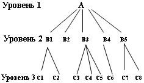Узел – это совокупность атрибутов данных, описывающих некоторый объект. На схеме иерархического дерева узлы представляются вершинами графа. Каждый узел на более низком уровне связан только с одним узлом, находящимся на более высоком уровне.
Иерархическое дерево имеет только одну вершину (корень дерева), не подчиненную никакой другой вершине и находящуюся на самом верхнем (первом) уровне. Зависимые (подчиненные) узлы находятся на втором, третьем и т.д. уровнях. К каждой записи базы данных существует только один (иерархический) путь от корневой записи.
Сетевая модель данных
В сетевой структуре при тех же основных понятиях (уровень, узел, связь) каждый элемент может быть связан с любым другим элементом.
На рисунке изображена сетевая структура базы данных в виде графа.
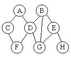Реляционная модель данных
Реляционная модель ориентирована на организацию данных в виде двумерных таблиц. Каждая реляционная таблица представляет собой двумерный массив и обладает следующими свойствами:
- каждый элемент таблицы – один элемент данных;
- все столбцы в таблице однородные, т.е. все элементы в столбце имеют одинаковый тип (числовой, символьный и т.д.) и длину;
- каждый столбец имеет уникальное имя (заголовки столбцов являются названиями полей в записях);
- одинаковые строки в таблице отсутствуют;
- порядок следования строк и столбцов может быть произвольным.
Отношение – это плоская таблица, содержащая N столбцов, среди которых нет одинаковых. N – это степень отношения, или арность отношения. Столбец отношения соответствует атрибуту сущности. Кортеж – строка отношения (соответствует записи в таблице).
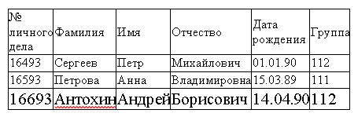Отношения представлены в виде таблиц, строки которых соответствуют кортежам или записям, а столбцы – атрибутам отношений, доменам, полям.
Поле, каждое значение которого однозначно определяет соответствующую запись, называется простым ключом (ключевым полем).
Если записи однозначно определяются значениями нескольких полей, то такая таблица базы данных имеет составной ключ. В примере ключевым полем таблицы является "№ личного дела".
HTML – это язык гипертекстовой разметки текста. Гипертекстовым HTML называется потому, что с его помощью на странице можно устанавливать ссылки на все прочие веб-документы.
А языком разметки он зовется потому, что в его прямые функции входит размещение элементов на странице. Как вы понимаете из всего вышесказанного, основное предназначение HTML состоит в разработке статических веб-страниц.
HTML – это самый распространенный инструмент создания сайтов, если вы обратите внимание на исходных код страниц, то увидите, что среди всех онлайн-проектов большинство пишется именно на базе HTML.
Кроме того, HTML никогда не стоит на месте в плане развития, без конца появляются новые версии, которую позволяют оптимизировать и облегчить работу, улучшая при этом общую картину конечного результата. Последняя версия HTML – это HTML 5.
Возможности HTML
Язык состоит из тегов — это своеобразные команды, которые преобразовываются в визуальные объекты в браузере пользователя. Например, тег используется для размещения изображений на странице.
Язык гипертекстовой разметки очень просто осваивается и вникнуть в его основы может даже школьник за весьма непродолжительное время.
Как было сказано выше, инструмент создания сайтов
HTML ускоряет разработку и снижает нагрузку на браузер, но без других языков ему пока не обойтись, как и им без него.
Является ли HTML языком программирования?
Нет. Такие языки используются для написания программ и веб-приложений, в них есть условия, функции, переменные, операторы и так далее. В HTML есть только теги, которые помогают браузеру правильно отобразить содержимое сайта.
Первый способ создания сайта
Если использовать самый простейший способ, то действовать нужно в следующей последовательности:
- создание шаблона на языке HTML;
- копировать код изменяемых элементов и вынести его в отдельный файл, которому присваивается расширение «tpl»;
- стираем код измененных элементов на страницах (только в такой последовательности);
- на месте стертого HTML-кода на страницы вводятся только одна строчка РНР-кода. (В строчке этой – прописан путь до того самого файла с расширением «tpl» (такие строчки PHP-кода еще называют «инклудами»)).
- меняем расширение страничек HTML, то есть мы меняем «html» на «php».
Вот такой вот незамысловатый способ, несомненно, облегчит жизнь начинающему создателю сайтов. Многие начинающие пользуются таким вот способом до сих пор.
Второй способ создания сайтов
Второй способ создания сайтов будет немного посложнее. Тут используется системы управления контентом (CMS), или как пишут на форумах, для легкой ориентировки – с помощью “движка”. Таких “движков” тьма тьмущая по всей паутине. Большинство из них сегодня платные, но если покопаться, то можно найти и бесплатные.
В принципе самые простые (сравнительно) это «WORDPRESS» и «Joomla». Именно с помощью «WORDPRESS» создано большинство блогов.
Достоинств у такого “движка” вагон и маленькая тележка – это удобство и никаких лишних вливаний средств, то есть он бесплатный, невероятная простота установки и настройка, и конечно к нему есть масса плагинов, при подключении которых можно невероятно расширить функции этого самого “движка”. Минус только в том, что создатели плагинов не всегда заботятся об их совместимости.
А теперь о втором “движке” под названием Joomla. Этот “движок” – уникальная вещь, о которой говорить можно долго, но отнюдь не нудно: с помощью его можно создавать порталы, блоги и еще кучу разных фишек в таком же роде. Четыре слова – “Сайт русской поддержки Joomla” (а точнее один из сайтов) и у вас все получится!
Третий способ создания сайтов
И третий способ создания сайтов, так сказать для людей либо ленивых по своей природе, либо с нехваткой на это дело времени.
Вам нужно будет просто на просто открыть “блогер”, “живой журнал” или что-нибудь созданное на этом подобии и завести аккаунт. Там создание блога не займет много времени – на это потребуется все лишь несколько секунд или минут (все ориентируются на сайтах по-разному).
Тут конечно существует один такой большой и жирный минус! На вот таких вот сайтах где вы создаете аккаунт, у вас нет ни имени, ни рода, ни племени. Прикрыть вас могу быстрее, чем кто-либо скажет: “Безперспективняк!” Прав у вас как таковых – мизер и развернутся негде – везде возведены стены из запретов.
В общем, третий способ самый легкий, но и самый незначительный и не уважаемый, поскольку все хотят быть индивидуальными, а не идти под одной гребенкой со многими. Для начинающих блогеров – это конечно как маленький тренинг. Но конечно вот таким вот блогам до «WORDPRESS» как до другого края вселенной.
Тут только три способа создания сайтов. Но на этом средства создания и сопровождения сайта не заканчиваются.
Цифровыми запоминающими устройствами называют устройства, предназначенные для записи, хранения и считывания информации, представленной в цифровом коде.
К основным параметрам запоминающих устройств (ЗУ) относятся:
- Информационная емкость, определяемая числом ячеек памяти ЗУ и указывающая на максимальный объем хранимой информации. Если ЗУ рассчитано на хранение п чисел, каждое из которых имеет m разрядов, то информационная емкость определяется выражением N = п х т. Емкость ЗУ выражается в байтах и может составлять от десятков до нескольких миллионов бит.
- Потребляемая мощность — это мощность, используемая ЗУ в установившемся режиме.
- Время хранения информации — интервал времени, в течение которого ЗУ сохраняет информацию в заданном режиме.
- Быстродействие — промежуток времени, необходимый для записи или считывания информации.
Локальная сеть — объединение нескольких компьютеров, расположенных на небольшом расстоянии друг от друга (обычно в пределах одного здания) для совместного решения информационных, вычислительных, учебных и других задач. В небольшой локальной сети может быть 10-20 компьютеров ,в очень большой — порядка 1000.
Передача информации - заблаговременно организованное техническое мероприятие, результатом которого становится воспроизведение информации, имеющейся в одном месте, условно называемом "источником информации", в другом месте, условно называемом "приёмником информации".
Закон РФ № 3523-1 «О правовой охране программ для ЭВМ и баз данных»
Этот закон даёт юридически точное определение понятий, связанных с авторством и распространением компьютерных программ и баз данных. Он определяет, что авторское право распространяется на указанные объекты, являющиеся результатом творческой деятельности автора.
Закон РФ №149-ФЗ «Об информации, информационных технологиях и защите информации»
Этот закон Регулирует отношения, возникающие при осуществлении права на поиск, получение, передачу и производство информации; применении информационных технологий; обеспечении защиты информации.
Закон №152-0ФЗ «О персональных данных»
В 2006 году этот закон вступил в силу, его целью является обеспечение защиты прав и свобод человека и гражданина при обработке его персональных данных, в том числе защиты прав на неприкосновенность частной жизни, личную и семейную тайну.
Компьютерная графика - раздел информатики, предметом которого является работа на компьютере с графическими изображениями (рисунками, чертежами, фотографиями, видеокадрами и пр.).
Графический редактор - прикладная программа, предназначенная для создания, редактирования и просмотра графических изображений на компьютере.
Виды компьютерной графики:
- Растровая - основной элемент растрового экранного изображения – точка, называемая пикселем. Чтобы увидеть эти точки, нужно многократно увеличить изображение.
- Векторная - Элементарный объект векторной графики – линия. Все в векторной иллюстрации состоит из линий.
- Фрактальная - основана на автоматической генерации изображений путем математических расчетов. Создание фрактальных изображений основано не в рисовании, а в программировании. Фрактальная графика редко используется в печатных или электронных документах.
Существуют такие проблемы, как: бесконтрольное распространение и использование персональных данных граждан, утечка или потеря коммерческой информации, кража интеллектуальной собственности, атаки на государственные ресурсы и порталы, кибервойны.
Эти проблемы можно решить с двумя условиями: внимание к данным вопросам власти, владельцев крупных компаний и согласованная деятельность международных и национальных органов по борьбе с этими проблемами.
Информацио́нное о́бщество — общество, в котором большинство работающих занято производством, хранением, переработкой и реализацией информации, особенно высшей её формы — знаний. Для этой стадии развития общества и экономики характерно:
- увеличение роли информации, знаний и информационных технологий в жизни общества;
- возрастание числа людей, занятых информационными технологиями, коммуникациями и производством информационных продуктов и услуг, рост их доли в валовом внутреннем продукте;
- нарастающая информатизация общества с использованием телефонии, радио, телевидения, сети Интернет, а также традиционных и электронных СМИ;
- создание глобального информационного пространства, обеспечивающего:
- эффективное информационное взаимодействие людей;
- их доступ к мировым информационным ресурсам;
- удовлетворение их потребностей в информационных продуктах и услугах.
- развитие электронной демократии, информационной экономики, электронного государства, электронного правительства, цифровых рынков, электронных социальных и хозяйствующих сетей.